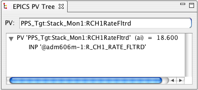

The first screen-shot shows an analog input (ai) record, which reads its input (INP) directly from a device support module that happens to understand the input description "adm606m....".
The second screen-shot shows a more interesting hierarchy: A binary input record (bi) reads from a calculation (calc), whose first input (INPA) reads from an mbbi which in turn reads from another calc and so on. Note how the color-coding indicates severities.
 - Collapse the tree, i.e. close all sub-sections of the tree.
- Collapse the tree, i.e. close all sub-sections of the tree.
 - Display all items in the tree that are in an alarm state.
Note that this is performed whenever you push the tool bar button.
If the PV tree items update, branches will not automatically
show or hide based on their alarm state, because this could
result in a very nervous display for a rapidly changing
PV tree.
Whenever you desire to update the tree to show/hide items,
push the button.
- Display all items in the tree that are in an alarm state.
Note that this is performed whenever you push the tool bar button.
If the PV tree items update, branches will not automatically
show or hide based on their alarm state, because this could
result in a very nervous display for a rapidly changing
PV tree.
Whenever you desire to update the tree to show/hide items,
push the button.
 - Expand all sub-sections of the tree.
- Expand all sub-sections of the tree.
This tool uses the EPICS network protocol, Channel Access, to read PVs. There is no way to query EPICS V3 IOCs for their database information to determine the available "input" links.
The knowledge of which links to follow for each record type is therefore configured into the EPICS PV Tree application. It is at this time not configurable by end users, but people with access to the source code can determine the syntax from the preferences.ini file and override in the CSS plugin_customization.ini for site-specific settings.